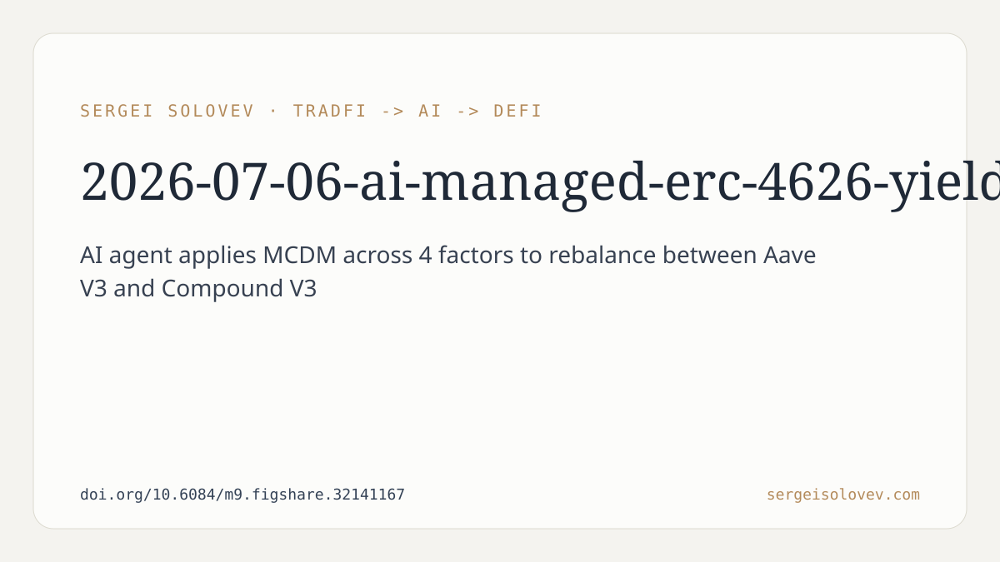

```markdown
# AI-Managed ERC-4626 Yield Vault with Multi-Criteria Decision Making: Design, Implementation, and Formal Verification
Most yield optimisers in DeFi do one thing: compare APYs and move funds to whichever protocol currently offers the highest number. This is simple, auditable, and often wrong. A protocol advertising 8% APY might carry smart-contract risk that makes it a worse choice than one offering 6%. Transaction costs might make frequent rebalancing net-negative. Rate volatility might mean a high APY today is gone before the transaction confirms. Yet the dominant approach ignores all of this in favour of a single metric.
A preprint published on 15 April 2026 (v1) describes an alternative: an AI agent that applies Multi-Criteria Decision Making (MCDM) to vault rebalancing, scoring candidate protocols across four explicit factors rather than one.
The system is an ERC-4626 tokenised vault that holds USDC and allocates deposits between Aave V3 and Compound V3 on Ethereum. A Python-based agent runs off-chain, periodically evaluates both protocols, and decides whether to rebalance. When it decides to act, it submits a cryptographically signed instruction to the on-chain vault contract, which verifies the signature before executing any fund movement.
The vault component follows the ERC-4626 standard, which defines a uniform interface for yield-bearing vaults — deposit, withdraw, and share accounting. Using an established standard matters here because it makes the vault composable with other DeFi tooling and limits the surface area for custom logic that could introduce bugs.
The central design choice is the scoring model. Rather than picking the protocol with the highest current yield, the agent computes a weighted score across four criteria: yield, risk, cost-efficiency, and stability. The abstract does not specify the exact weights, but the structure is deliberate: it forces the designer to make tradeoffs explicit and auditable rather than implicit.
This matters for a practical reason. Single-metric optimisation in noisy environments tends to overfit to transient signals. If yield is the only criterion, the agent will respond to every short-lived rate spike with a rebalance, paying gas costs and potentially moving funds into temporarily elevated but fundamentally riskier positions. By including cost-efficiency as an explicit factor, the model can penalise unnecessary rebalancing. By including stability, it can discount protocols whose rates are highly variable even if their current APY looks attractive.
The MCDM framing also makes the system's reasoning legible. If the agent declines to rebalance despite a yield differential, the scored factors explain why. This is harder to achieve with a black-box ML model, which is presumably why the authors chose a structured scoring approach rather than a neural network.
The system splits computation between off-chain and on-chain environments deliberately. Complex multi-criteria scoring is expensive to run on-chain — EVM computation costs gas, and iterating over protocol data with weighted arithmetic would be prohibitively costly. Moving this logic off-chain into a Python agent makes the analysis computationally unconstrained.
The problem this creates is trust: how does the on-chain vault know the agent's decision is authentic and hasn't been tampered with? The answer is EIP-712 typed data signing. The agent signs its rebalance decision with a private key, and the vault contract verifies the signature before acting. This gives the architecture a specific security property: every rebalance is cryptographically attributable to an authorised agent. An attacker who wanted to trigger unauthorised rebalancing would need the agent's private key, not just the ability to call the contract.
EIP-712 is a Ethereum standard for structured data signing, meaning the signed payload includes typed fields rather than a raw hash. This prevents certain signature malleability attacks and makes the signed content human-readable for tooling that supports it.
The safety guarantees come from invariant testing with over 76,800 randomised function calls and zero violations. This is fuzz testing against invariants — properties that must hold regardless of input, such as "total assets in the vault always equal the sum of positions in underlying protocols" or "no rebalance can leave user shares under-collateralised."
76,800 calls is a meaningful number. Fuzzing is not exhaustive proof, but a high call count with no invariant violations gives statistical confidence that the core accounting logic behaves correctly across a wide input space. The authors are careful to describe this as formal safety guarantees through invariant testing rather than a mathematical proof, which is an accurate characterisation of what fuzzing provides.
The system includes a Chainlink Automation integration as a fallback for protocol liveness. If the primary agent goes offline, Chainlink's keeper network can trigger rebalancing checks on a schedule. This is a pragmatic engineering choice: an off-chain agent has uptime risk, and a vault that stops rebalancing entirely during agent downtime is a worse outcome than a vault that falls back to automated, rule-based checks.
The deployment is on Ethereum Sepolia testnet, not mainnet. The abstract makes no claims about returns, does not compare performance against existing yield optimisers under real market conditions, and does not address what happens under adversarial conditions such as oracle manipulation or protocol insolvency. These are the honest boundaries of what the paper covers: design, implementation, and formal verification of the mechanism, not empirical performance evaluation.
The contribution is architectural — a structured, verifiable decision-making layer between an AI agent and on-chain fund management, with a specific answer to the trust problem (EIP-712 signing) and a specific answer to the oversimplification problem (MCDM). Whether the particular weights and criteria chosen produce better outcomes than simpler alternatives in practice is a question left for future work.
Full preprint: https://doi.org/10.6084/m9.figshare.32141167
```